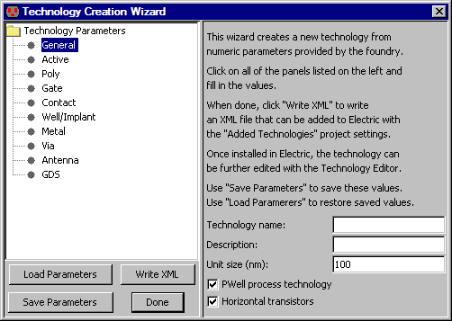
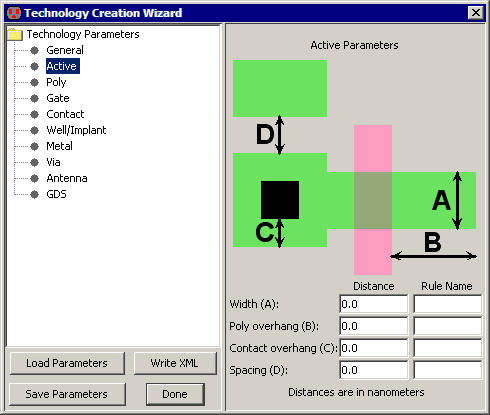
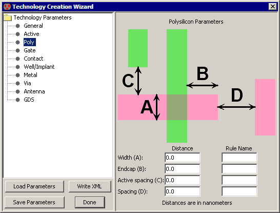
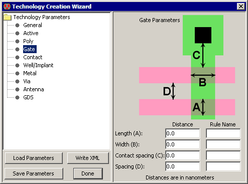
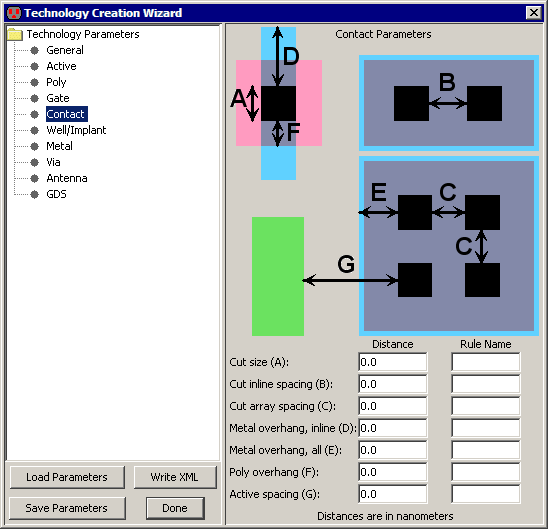
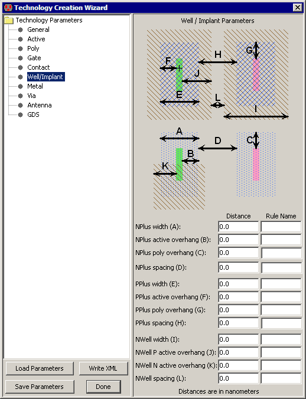
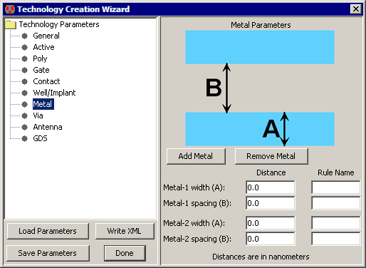
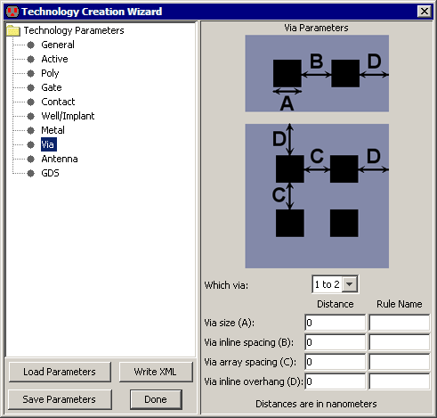
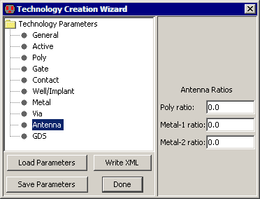

|
The technology creation wizard generates a new technology from a few simple parameters.
To start it, use the Technology Creation Wizard... command
(in menu Edit / Technology Editing).
The wizard has a set of panels that describe various aspects of the technology.
The first panel that appears, "General" describes the wizard and requests some basic information.
The Unit size is the number of nanometers per grid square.
The Resolution is the smallest feature size allowed.
The "Psubstrate process" controls well generation.
The "Horizontal transistors" controls the orientation of transistors.
|  |
The values in these panels can be saved to disk with the "Save Parameters"
button and restored from disk with the "Load Parameters" button.
When all parameters have been filled-in, use the "Write XML" button to generate an XML file for the technology.
This file can then be installed into Electric with the Added Technologies Preferences panel
(see Section 8-2 for more).
|  |
The "Active" panel lets you specify size and spacing values for the Active layer.
Note that all sizes are in nanometers.
For example, if the Active Width (A) is set to 200, and the Unit size (in the General panel)
is set to 100, then Active arcs will be 2 units wide.
The "Rule Name" fields let you describe the rule so that the design-rule checker can report error names.
|
|
The "Poly" panel lets you specify size and spacing values for the Polysilicon layer.
The "Rule Name" fields let you describe the rule so that the design-rule checker can report error names.
|  |
|  |
The "Gate" panel lets you specify size and spacing values for the Polysilicon layer in transistors.
The "Rule Name" fields let you describe the rule so that the design-rule checker can report error names.
|
|
The "Contact" panel lets you specify size and spacing values for the Contact layer.
The "Rule Name" fields let you describe the rule so that the design-rule checker can report error names.
Note that "inline" spacing is for one-dimensional arrays of contacts
and "array" spacing is for two-dimensional arrays.
|  |
|  |
The "Well/Implant" panel lets you specify size and spacing values for the Well and Implant layers.
The "Rule Name" fields let you describe the rule so that the design-rule checker can report error names.
|
|
The "Metal" panel lets you specify size and spacing values for the Metal layer.
You can change the number of Metal layers with the "Add Metal" and "Remove Metal" buttons.
The number of metal layers should be established in this panel before using subsequent panels that depend on this.
The "Rule Name" fields let you describe the rule so that the design-rule checker can report error names.
|  |
|  |
The "Via" panel lets you specify size and spacing values for the Via layer.
A popup lets you select the desired via.
Note that the "Metal" panel should be completed before filling-in this panel
so that the proper number of via layers is shown.
The "Rule Name" fields let you describe the rule so that the design-rule checker can report error names.
|
|
The "Antenna" panel lets you specify antenna ratios for all layers.
Note that the "Metal" panel should be completed before filling-in this panel
so that the proper number of metal layers is shown.
The values here are the maximum ratio of polysilicon and metal layers to the area of connected transistors.
For example, if the Metal-1 ratio is 200, then it is an error to have Metal-1 connected to transistors
if the area of the Metal-1 is more than 200 times the area of the transistors.
See Section 9-3-2 for more on antenna ratio checking.
|  |
 |
The "GDS" panel lets you specify GDS layer numbers for all layers.
Note that the "Metal" panel should be completed before filling-in this panel
so that the proper number of metal layers is shown.
|